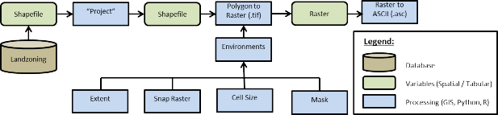
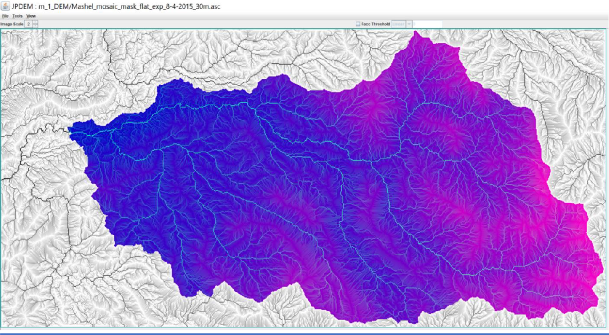
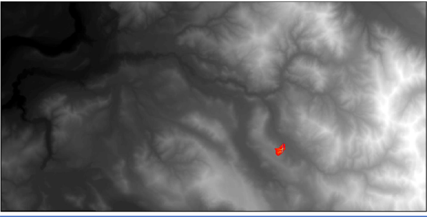
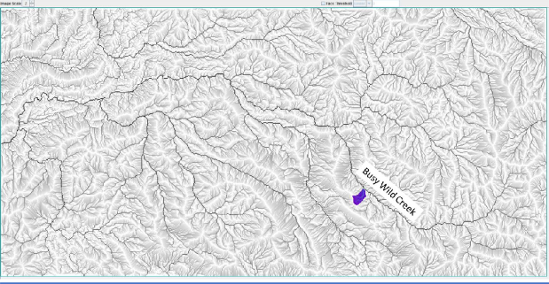
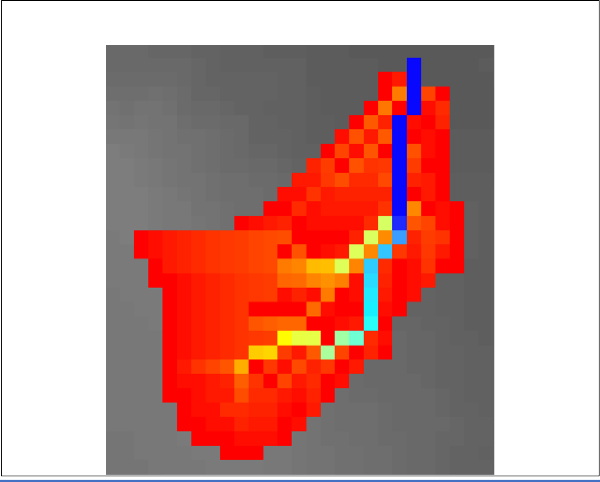
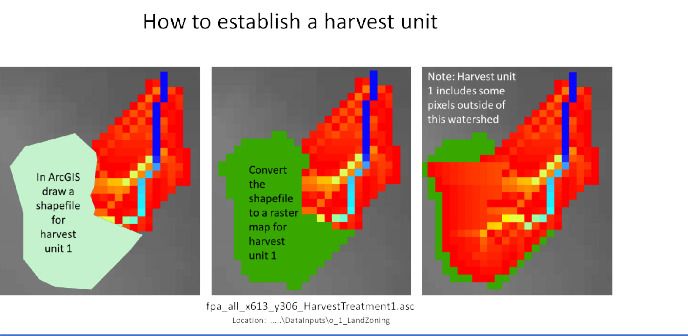
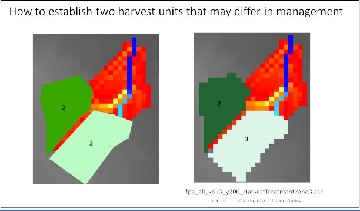

D.5 | Create Land-zoning Maps for a VELMA Application
Overview (Tutorial D.5 - Create Land-zoning VELMA Input Data)
This document describes how to set up a land-zoning map, which includes the same integer code for all pixels in a particular zone. Once a land-zoning map is established, a VELMA user can apply a disturbance (harvest, fertilization, etc.) to a specified zone. Land-zoning maps can be used to define boundaries for land management units, land ownership, cover types, and so on.
Note: Detailed instructions for setting up and applying disturbances to land-zoning maps are provided in section 24.0 in the VELMA 2.0 User Manual (https://www.epa.gov/water-research/visualizing- ecosystem-land-management-assessments-velma-model-20).
The DEM file is the "master" layer for a simulation run: all other spatially-explicit data is assumed to have the same row, column, cell size and x, y offset values as the DEM file. Spatial data is nearly always input from files in ESRI Grid ASCII format (.asc), therefor all spatial data inputs including the Land-zoning maps must match the DEM file (.asc.).
Shapefile Conversions
Forest practices, land ownership, and other land parcel maps are typical packaged as shapefiles in various State projections and need to be converted into VELAM compatible spatial inputs.
Figure 11 GIS Processing
Using a common GIS package such as ArcMap the process flow would be as follows (figure 1):
- Initial data acquisition from a database -> Shapefile
- Reproject the Shapefile to match the VELAM DEM projection."Project" Data Management
- Convert the Shapeflie to Raster.
- "Polygon to Raster" (.tif) Conversion
- While using the "Polygon to Raster" tool the user must define the "Environments settings" to ensure correct extent, cell size, and snapping to the DEM.
- "Processing Extent"
- "Extent" -> to match DEM file
- "Snap Raster" -> to match DEM file
- "Raster Analysis"
- "Cell Size" -> to match DEM file
- "Mask" -> to match DEM file
- Convert Raster to ASCII: "ASCII to Raster" (.asc)
GIS Examples
JPDEM Delineation of the 209 km2 Mashel River Watershed, WA.
Hill-shade view of 4 km2 Busy Wild Creek subwatershed (red) within Mashel River Watershed (209 km2)
Flow-path view of 4 km2 Busy Wild Creek subwatershed (blue) within Mashel River Watershed (209 km2)
Zoomed-in view of the 4 km2 Busy Wild Creek subwatershed shown on page 5. This view shows individual 30-meter pixels with coloration indicating flow path intensity (blue = highest flow; red = lowest flow).
To apply a forest harvest or other disturbance to these units:
the VELMA user will need to assign a single, unique value to each unit. For this example, all pixels falling within map unit 2 would need to be labeled 2, and all pixels in map unit 3 would need to be labeled 3. Separate disturbances could then be designed for each unit, for example, unit 2 = clearcut; unit 3 = 50% thinning.